What is this?
Ultibake is a Blender addon that makes baking textures for your 3D models fast and easy. It supports UDIM baking, decal baking, and channel packing. It integrates well with DECALmachine and UVPackmaster3, two extremely useful Addons for Blender. Ultibake uses the best features of Marmoset Toolbag(Baking Sets) and Substance Painter(Decal Baking)
Get it on The Blender Marketplace
Get it on Gumroad
User Interface
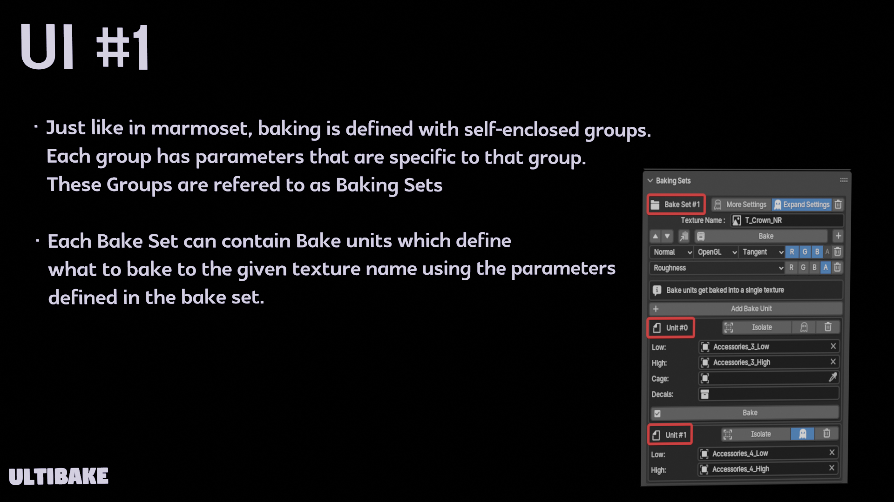 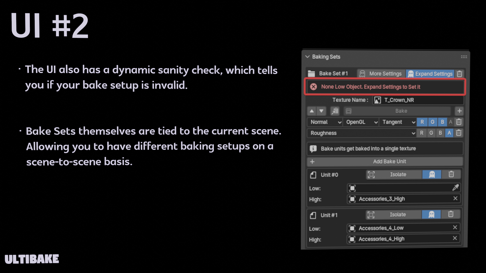 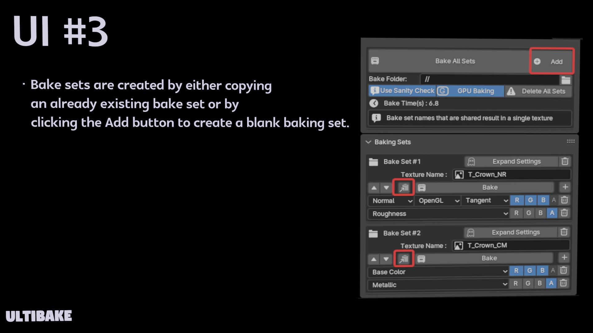 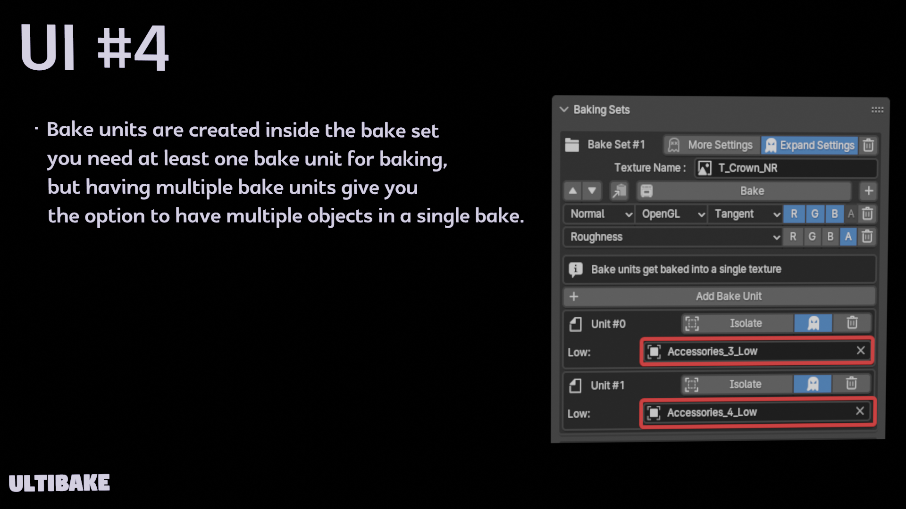 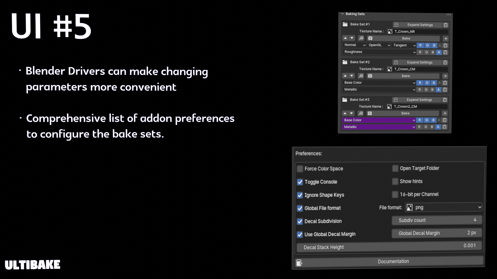
The Basics
When baking for the first time, you might have to wait for a minute as the baker will fetch dependencies on its first bake.
Because we are using "//" as the path, which means a relative path, we need to save the .blend file or it will display an invalid path.
The only thing you need for a bake is to create a bake set from the vertical ribbon on the right in the 3D-viewport, then assign your target object (low) for baking in the bake unit.
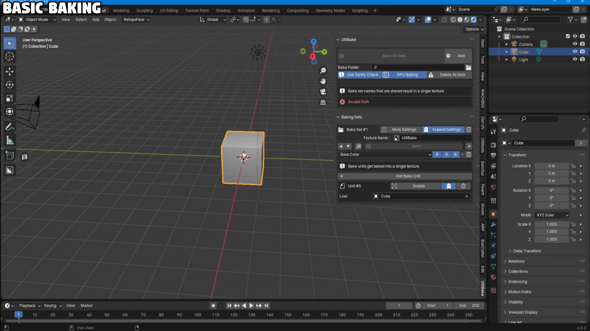
All the materials must contain at least a Principled BSDF node as this is used by the baker for the bake types.
The sidebar can get cluttered very fast. It is recommended to utilize different scenes, as the bake sets are stored per-scene. You can also disable hints for a more compact UI.
On the upper part of the Ultibake UI, there is a Sanity check toggle. I recommend keeping this on at all times as it will prevent you from baking something that might be invalid. However, since this sanity check is expensive, it can also lag the HUD.
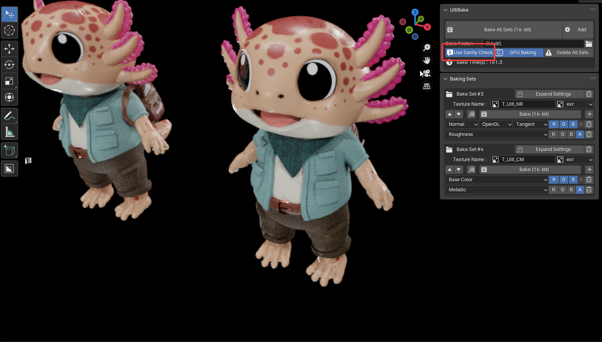
Channel Packing
A very useful technique used to fit extra bakes into an image.In Ultibake, each bake set has an explicit RGB or RGBA selector to the right of the of each bake type.
Bake types are added from the + next to the bake button.
There is a difference between the RGB and RGBA selectors, but basically, the RGB selector is asking what to bake from the selected bake type.
Opposed to the RGBA selector, which is asking what channel to bake the type into. 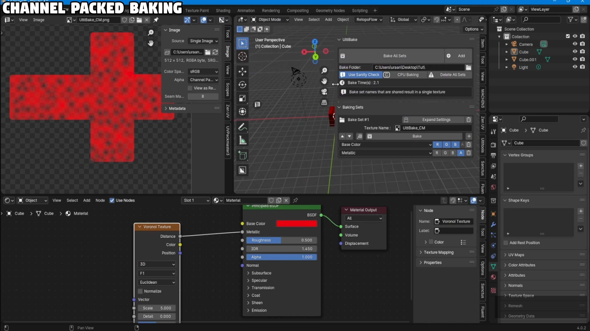
Decal Baking
Ultibake is currently the only option out there in terms of "multi-mask decal baking," where we can bake multiple masks at the same time like with these decals from DECALmachine. The closest equivalent is the decal tool in Substance Painter, except this one is non-destructive!
In this image, we can see multiple decals with the color, normal, roughness, and metal masks being applied to Suzanne.
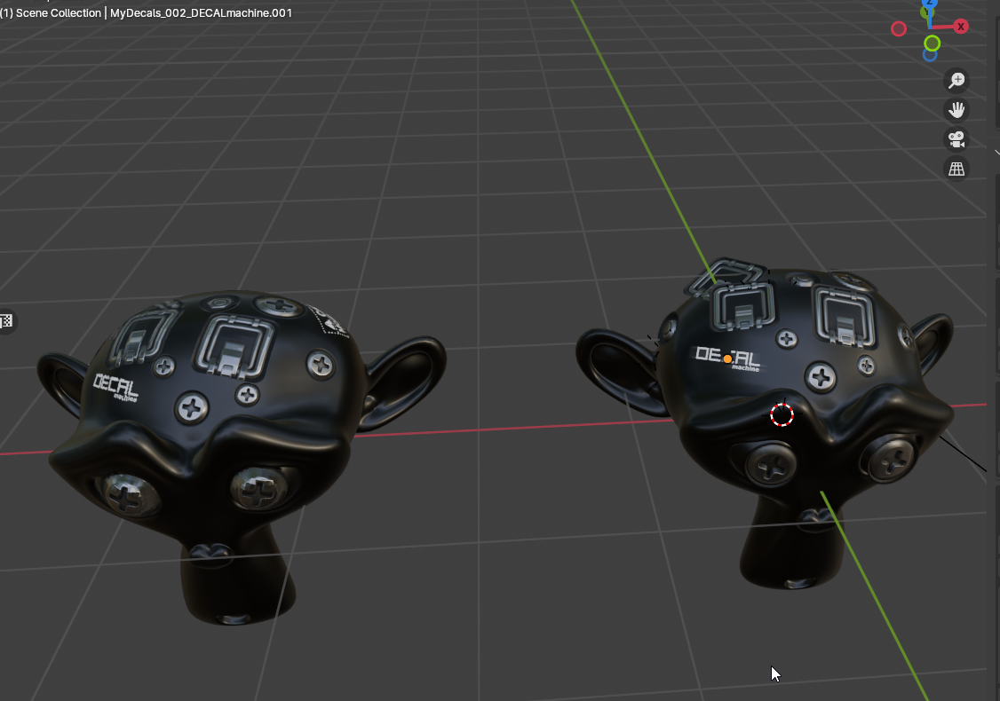
Non-overlapping decals with an alpha channel will be masked accordingly. When baking with planes, it is important to make sure that the decal is not inside the low object.
 To get overlapping decals to stack correctly, we must use the alpha stacker node to turn the alpha mask into a mesh (the node is included with the addon as a library). The overlapped decals are stacked according to the order in which they appear in the collection, which is defined by the alphabetical order of the object names.
To get overlapping decals to stack correctly, we must use the alpha stacker node to turn the alpha mask into a mesh (the node is included with the addon as a library). The overlapped decals are stacked according to the order in which they appear in the collection, which is defined by the alphabetical order of the object names.
 To bake decals which have multiple masks like these metal insets, we have to add a bake set for each bake type. If the bake set only contains a bake unit with the decal collection and low object, this will bake just the decals, which can be useful if you just want the decals as a separate texture. If you intend to do this, you should have a bake set using the alpha bake type so you can mask the decals with an underlying texture.
To bake decals which have multiple masks like these metal insets, we have to add a bake set for each bake type. If the bake set only contains a bake unit with the decal collection and low object, this will bake just the decals, which can be useful if you just want the decals as a separate texture. If you intend to do this, you should have a bake set using the alpha bake type so you can mask the decals with an underlying texture.
If you want to combine the low object's material and decals, you add another bake unit containing just the low object.
 The decal subdivision checkbox automatically subdivides each decal before trying to wrap it around the desired object. This is ideal for curved surfaces, but it can slow down the bake times considerably at high poly counts. A value of 4 is usually good enough for small/medium-sized decals, but for long strips like zippers or strip sheets, it's recommended to subdivide the mesh manually.
The decal subdivision checkbox automatically subdivides each decal before trying to wrap it around the desired object. This is ideal for curved surfaces, but it can slow down the bake times considerably at high poly counts. A value of 4 is usually good enough for small/medium-sized decals, but for long strips like zippers or strip sheets, it's recommended to subdivide the mesh manually.
The stack height controls the projection offset from the surface of the low object; this value should be as close to zero as possible for accurate projection, but in certain situations increasing this will fix clipping issues.
The Global Decal margin works like the margin for UV islands; note that it only affects mesh borders. For text objects, this should be 0 to prevent the text from bleeding. As with the margin for UV islands, increasing this value prevents seams when the decal crosses UV borders.
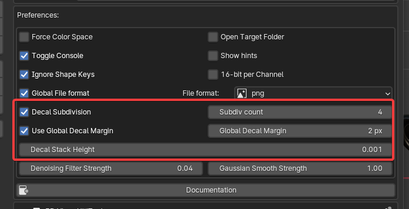
High to Low Poly Baking
In this process, we take a high-poly mesh, typically a sculpted model, and project its surface details onto another object, usually a low-poly quad mesh.
The advantage lies in obtaining high-frequency details from the sculpt while maintaining real-time performance, crucial for gaming applications.
To employ High to Low baking with Ultibake, it is essential to specify the low and high objects. Proper adjustment of the Cage Extrusion parameter is vital; the low-poly object must envelop the high-poly object to prevent clipping.
If fine-tuning the cage extrusion parameter proves ineffective, using a helper mesh (cage) that encases the high-poly object becomes necessary.
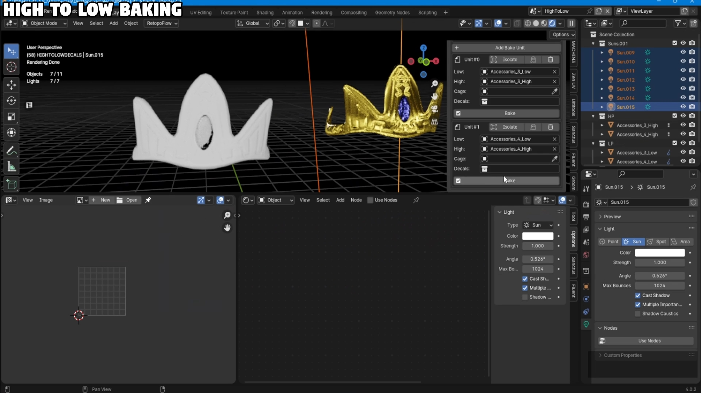
Incorporating a shrinkwrap modifier on the low-poly object, targeting the high-poly object without applying it, offers a practical approach compared to specifying a cage object.
Personally, I prefer this method as it allows for a visual assessment of the overlap between the low-poly and high-poly objects, but it does require the low and high object to be overlapping, which can make the bake setup more messy.
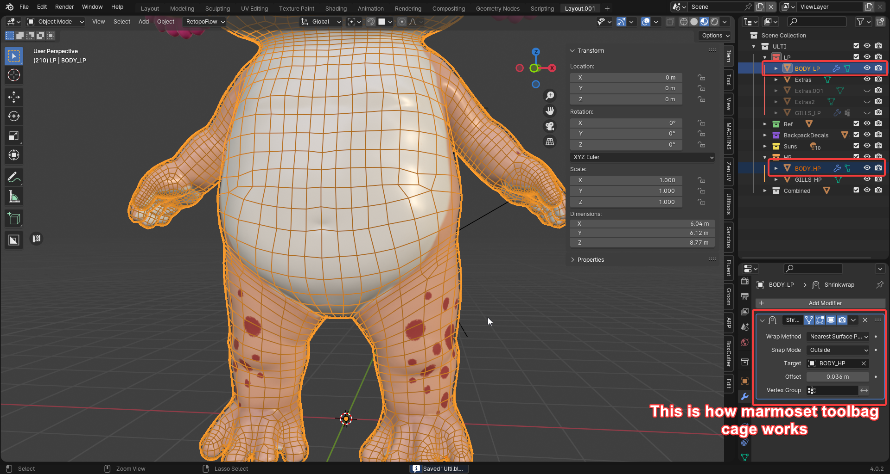
UDIM Baking
The benefits of UDIM's are that you can separate a single bake into multiple textures, which allows for more control over texture quality.
UDIM baking is automatically applied to a bake set when the low object's UV map contains UV islands that are outside of initial UV tile(1001)
In this Image below the UVs are crossing 4 UDIM tiles 1001,1002,1011 and 1012. This results in 4 textures. with the udim index at the end of each image file.
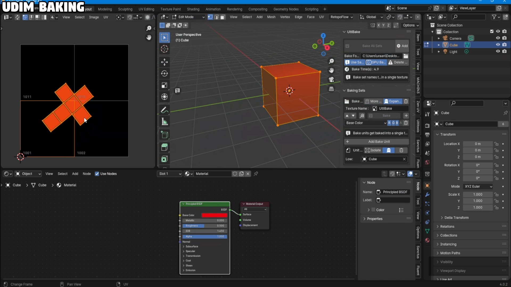
You can control the resolution scale with UDIM scale rules. The UDIM scale rule is a bake set parameter which defines the multiplier for the texture resolution based on the bake set resolution.
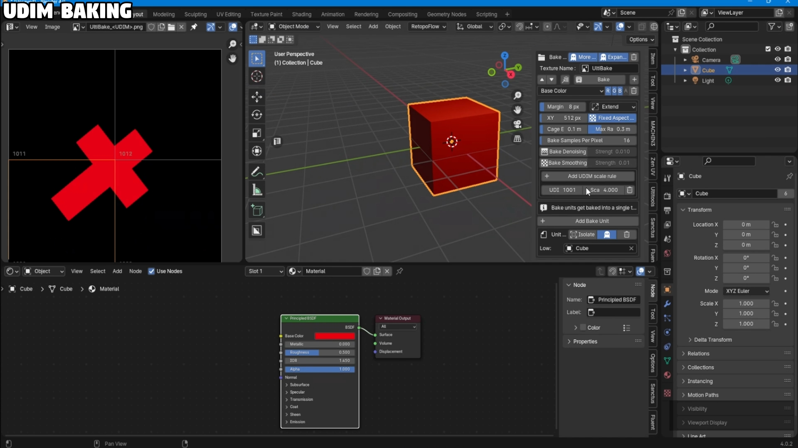
Compression Baking
Sometimes you might be in situation where your model contains hundreds of materials and or textures. In this video I'll be covering, how to compress all of those materials into a single texture.
Changelist
1.5.2 - Initial public release
1.5.3 - Hotfix
- Improved Decal machine material support
- Automatic decal subdivision
- Removed edge control(redudant due to decal margin)
- New bakesets are now added to bottom instead of top
1.6.0 - QOL update
- UDIMS are now automatically detected from UV map
- UDIMS resolution rules added to bake set settings
- New bake units are now added to the bottom instead of top
- bake sets can now have multiple bake types!
- bake sets that don't use the alpha channel will default to 1.0 alpha correctly.
- Channel selector is now aligned
- Bake denoise/blur strength moved to bakeset settings.
- Hide option added to bake unit
- Cancel option added to baking (E+Ctrl)
- Fixed Shapekey ignore not working when using decals.
- High to Low baking no longer requires overlapping.
1.6.1 - Hotfix
- Fixed broken imports
- Fixed some scene parameters being modified after bake